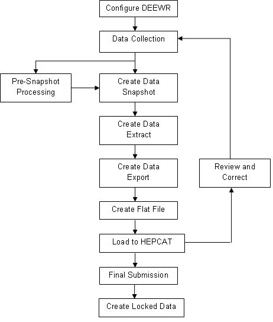
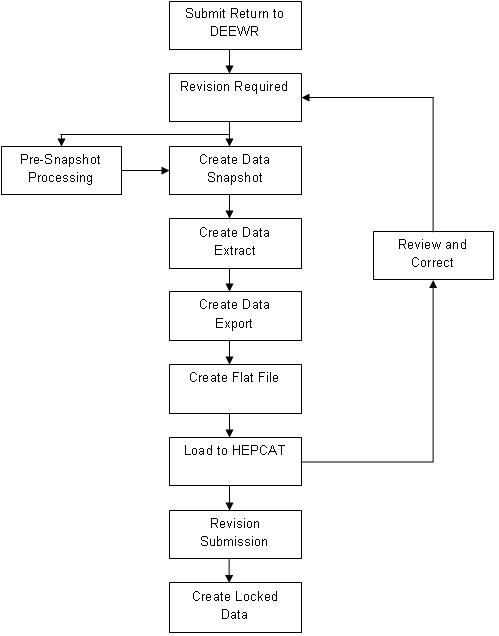

MDUU Processing for Banner DEEWR
Processing overview
The typical top-level process flow for Banner DEEWR starts with configuring DEEWR and ends with creating locked data.

Snapshot processing
The snapshot process populates snapshot data from baseline tables, locally developed tables, and tables from third-party applications.
The process allows selected target tables in the snapshot data structure to be populated. It has the capability to refresh (remove and insert) or update (add new rows and update existing rows) into the snapshot.
When running the snapshot, you can select which snapshot tables to populate. You can also purge the selected snapshot tables before re-inserting rows.
- Create snapshot data.
- Define the column mappings for the snapshot.
- Define the rules to generate the snapshot population.
- Initialise the snapshot.
- Populate the snapshot.
- Increment the snapshot (add or remove records without refreshing the snapshot from scratch).
Extract processing
The extract process populates the extract based on snapshot data and, where necessary, it transforms the snapshot data into the format needed for the extract.
The process allows selected target tables in the extract data structure to be populated. It has the capability to refresh (remove and insert) or update (add new rows and update existing rows) into the extract.
- Create extract data.
- Define the column mappings for the extract.
- Define the rules to generate the extract population.
- Use expressions and functions to derive values based on the contents of the snapshot.
- Initialise the extract.
- Populate the extract.
- Increment the extract (add or remove records without refreshing the cohort from scratch).
Export processing
This process populates the export based on extract data. The process allows selected target tables in the export data structure to be populated. It has the capability to refresh (remove and insert) or update (add new rows and update existing rows) into the export.
- Create export data.
- Define the mappings for the CLOB export column.
- Define the rules to generate the export population.
- Initialise the export.
- Populate the export.
- Increment the export (add and remove records without refreshing the cohort from scratch).
- View the export.
- Create a text file from the export data, for loading into the HEPCAT database.
File details
Banner DEEWR generates applications and offers, student, VET student loan, and VET course of study files.
Applications and offers
Banner DEEWR generates Application Details, Preference Details, and Offer Details files for the Applications and Offers return.
Application Details (AD) file
The Application Details (AD) file collects information about the applicants to a university.
In the case of the AD file reported directly by universities, it reports on applicants who have not applied through the Tertiary Admissions Centre (TAC), but who have applied directly to the University. The AD file uses several elements from files in the Student Data Collection.
The following table describes the activities for the AD file.
| Activity Type | Activity Name | Description |
|---|---|---|
| Snapshot | ASC_HEP_SNA_AD_FILE | This activity pulls data from several Banner tables to populate the DEEWR Application Details File Data Snapshot Table (SKRDSAD). The activity uses the application number, application status code, report term, report period, academic year code, PIDM, and submission ID as populate keys. |
| Extract | ASC_HEP_EXT_AD_FILE | This activity pulls data from the DEEWR Application Details File Data Snapshot Table (SKRDSAD) to populate the DEEWR Application Details File Data Extract Table (SKRDEAD). The activity uses the application ID, application status, report period, academic year code, submission ID, and PIDM as populate keys. |
| Export | ASC_HEP_EXP_AD_FILE | This activity pulls data from the DEEWR Application Details File Data Extract Table (SKRDEAD) to populate the DEEWR Application Details File Data Export Table (SKRDXAD). The activity uses the report period, academic year code, submission ID, application ID, application status, and PIDM as populate keys. |
Preference Details (PD) file
The data reported in the records of the Preference Details provides information on the applicant's preferences (for example, field of education and preference ordinal position) as at the reference date.
Each unique value for Element 700 (application identification code) can have multiple records in the PD file, as each preference listed by an applicant is reported as a separate data record.
The following table describes the activities for the PD file.
| Activity Type | Activity Name | Description |
|---|---|---|
| Snapshot | ASC_HEP_SNA_PD_FILE | This activity pulls data from several Banner tables to populate the DEEWR Preference Details File Data Snapshot Table (SKRDSPD). The activity uses the application ID, preference ordinal position, program, report period, academic year, submission ID, and PIDM as populate keys. |
| Extract | ASC_HEP_EXT_PD_FILE | This activity pulls data from the DEEWR Preference Details File Data Snapshot Table (SKRDSPD) to populate the DEEWR Preference Details File Data Extract Table (SKRDEPD). The activity uses the application ID, preference ordinal position, program, report period, academic year, submission ID, and PIDM as populate keys. |
| Export | ASC_HEP_EXP_PD_FILE | This activity pulls data from the DEEWR Preference Details File Data Extract Table (SKRDEPD) to populate the DEEWR Preference Details File Data Export Table SKRDXPD). The activity uses the application ID, preference ordinal position, PIDM, academic year, report period, and submission ID as populate keys. |
Offer Details (OD) file
The Offer Details (OD) file comprise information for all offers and responses to offers for admission of applicants to a higher education undergraduate award course made through a Tertiary Admission Centre (TAC) or directly by a Higher Education Provider (HEP).
The following table describes the activities for the OD file.
| Activity Type | Activity Name | Description |
|---|---|---|
| Snapshot | ASC_HEP_SNA_OD_FILE | This activity pulls data from several Banner tables to populate the DEEWR Offer Details File Data Snapshot Table (SKRDSOD). The activity uses the application ID, preference ordinal position, program to offer, report term, report period, academic year, submission ID, and PIDM as populate keys. |
| Extract | ASC_HEP_EXT_OD_FILE | This activity pulls data from the DEEWR Offer Details File Data Snapshot Table (SKRDSOD) to populate the DEEWR Offer Details File Data Extract Table (SKRDEOD). The activity uses the application ID, preference ordinal position, program to offer, PIDM, report period, academic year, and submission ID as populate keys. |
| Export | ASC_HEP_EXP_OD_FILE | This activity pulls data from the DEEWR Offer Details File Data Extract Table (SKRDEOD) to populate the DEEWR Offer Details File Data Export Table (SKRDXOD). The activity uses the application ID, preference ordinal position, PIDM, report period, academic year, and submission ID as populate keys. |
Student
Banner DEEWR generates many files for the Student return.
Campus (CM) file
The Campus (CM) file contains information that supports the publication of higher education course information on the MyUniversity website.
The following table describes the activities for the CM file.
| Activity Type | Activity Name | Description |
|---|---|---|
| Snapshot | ASC_HEP_SNA_CM_FILE | This activity pulls data from the Program Offering Table (SKRPOFR) to populate the DEEWR Campus File Data Snapshot Table (SKRDSCM). The activity uses the course code, offer year, campus code, and file number as populate keys. |
| Extract | ASC_HEP_EXT_CM_FILE | This activity pulls data from the DEEWR Campus File Data Snapshot Table (SKRDSCM) to populate the DEEWR Campus File Data Extract Table (SKRDECM). The activity ensures that each data element is correctly formatted, and uses the course code, offer year, campus code, and file number as populate keys. |
| Export | ASC_HEP_EXP_CM_FILE | This activity pulls data from the DEEWR Campus File Data Extract Table (SKRDECM), to populate the DEEWR Campus File Data Export Table (SKRDXCM). The activity pulls all the elements into one CLOB field, in the order required for file submission, and also contains an Offer Year field and a File Number field so that several data returns can be kept in the same table. |
| Export | ASC_HEP_FLAT_CM_FILE | This activity exports the CM file to a flat file format. This activity is used instead of the Universal Viewer (GKAPUNV) page to generate the flat file for CM files. The CM file now contains two new large CLOB fields that made the file too big to be exported through GKAPUNV. |
| Locked Data | ASC_HEP_LOCK_CM_FILE | This activity pulls data from the SKRDECM table to populate the DEEWR CM File Locked Data Table (SKRDLCM). The activity uses the course code, offer year, campus code, and file number as populate keys. |
| Delete Locked Data | ASC_HEP_LOCK_CM_DEL | This activity is run to purge records from the SKRDLCM table. You can run this activity when records are locked before checking and validation is completed, or when data needs to be changed and resubmitted. The activity temporarily disables the locking trigger, deletes records for the specified academic year, and file number and then, re-enables the locking trigger. |
Campus Deletion (CD) file
The Campus Deletion (CD) file is used to remove records that were previously reported in a CM file.
The following table describes the activities for the CD file.
| Activity Type | Activity Name | Description |
|---|---|---|
| Snapshot | ASC_HEP_SNA_CD_FILE | This activity pulls data from the DEEWR CM Locked Data Table (SKRDLCM) and the Program Offering Table (SKRPOFR) DEEWR Campus Deletion File Snapshot Table (SKRDSCD). The activity uses course code, course campus postcode, offer year, file number, and submit date as populate keys. |
| Export | ASC_HEP_EXP_CD_FILE | This activity pulls data from the SKRDSCD table to populate the DEEWR Campus Deletion File Export Table (SKRDXCD). The activity uses file number, submit date, course code, offer year, and course campus postcode as populate keys. |
| Locked Data | ASC_HEP_LOCK_CD_FILE | This activity pulls data from the SKRDSCD table to populate the DEEWR Campus Deletions File Locked Data Table (SKRDLCD). The activity uses file number, submit date, course code, and offer year as populate keys. |
| Delete Locked Data | ASC_HEP_LOCK_CD_DEL | This activity is run to purge records from the DEEWR Campus Deletions File Locked Data Table (SKRDLCD). You can run this activity when records are locked before checking and validation is completed, or when data needs to be changed and resubmitted. The activity temporarily disables the locking trigger, deletes records for the specified academic year, and file number and then, re-enables the locking trigger. |
Commonwealth Assisted Students (DU) file
A Commonwealth Assisted Students (DU) file is to be provided by higher education providers each time a Student Load/Liability file is submitted. This file reports personal details including names and CHESSNs of all Commonwealth-assisted students who are reported on the load/liability file for each reporting period.
The following table describes the activities for this file.
| Activity Type | Activity Name | Description |
|---|---|---|
| Snapshot | ASC_HEP_SNA_DU_FILE | This activity pulls data from several Banner tables to populate the DEEWR Commonwealth Assisted Students File Data Snapshot Table (SKRDSDU). The activity uses the course code, PIDM, academic year, report period, submission, registration term, report term, and file number as populate keys. |
| Extract | ASC_HEP_EXT_DU_FILE | This activity pulls data from the DEEWR Commonwealth Assisted Students File Data Snapshot Table (SKRDSDU) to populate the DEEWR Commonwealth Assisted Students File Data Extract Table (SKRDEDU). The activity ensures that each element is correctly formatted, and uses the course code, PIDM, academic year, report period, submission, and file number as populate keys. |
| Export | ASC_HEP_EXP_DU_FILE | This activity pulls data from the DEEWR Commonwealth Assisted Students File Data Extract Table (SKRDEDU) to populate the DEEWR Commonwealth Assisted Students File Data Export Table (SKRDXDU). The activity pulls all the elements into one CLOB field, in the order required for the file submission, and contains a Report Term field so that several data returns can be kept in the same table. The activity uses course code, PIDM, academic year, report period, submission, and file number as populate keys. |
| Locked Data | ASC_HEP_LOCK_DU_FILE | This activity pulls data from the SKRDEDU table to populate the DEEWR DU File Locked Data Table (SKRDLDU). The activity uses the course code, PIDM, academic year, report period, submission, and file number as populate keys. |
| Delete Locked Data | ASC_HEP_LOCK_DU_DEL | This activity is run to purge records from the SKRDLDU table. You can run this activity when records are locked before checking and validation is completed, or when data needs to be changed and resubmitted. The activity temporarily disables the locking trigger, deletes records for the specified academic year, report period, submission and file number and then, re-enables the locking trigger. |
Commonwealth Scholarships (CS) file
All students in receipt of a Commonwealth Scholarship (CS) must have a record reported for each reporting period from the time the student is reported as commencing a Commonwealth Scholarship, until such time the CS is terminated.
The following table describes the activities for this file.
| Activity Type | Activity Name | Description |
|---|---|---|
| Snapshot | ASC_HEP_SNA_CS_FILE | This activity pulls data from several Banner tables to populate the DEEWR Commonwealth Scholarships File Data Snapshot Table (SKRDSCS). The activity uses the PIDM, academic year, report period, and Commonwealth Scholarship type code as populate keys. |
| Extract | ASC_HEP_EXT_CS_FILE | This activity pulls data from the DEEWR Commonwealth Scholarships File Data Snapshot Table (SKRDSCS) to populate the DEEWR Commonwealth Scholarships File Extract Table (SKRDECS). The activity ensures that each element is correctly formatted, and uses the PIDM, academic year, report term, report period, and Commonwealth Scholarship type code as populate keys. |
| Export | ASC_HEP_EXP_CS_FILE | This activity pulls data from the DEEWR Commonwealth Scholarships File Extract Table (SKRDECS) to populate the DEEWR Commonwealth Scholarships File Export Table (SKRDXCS). The activity pulls all the elements into one CLOB field, in the order required for the file submission, and contains a Term field and a Report Period field so that several data returns can be kept in the same table. The activity code uses academic year, report term, report period, PIDM, and Commonwealth Scholarship type code as populate keys. |
Course of Study (CO) file
The Course of Study (CO) file contains data for all courses to be provided in a particular year.
- Student Enrolment Files
- Student Load/Liability Files
- HELP DUE Files
- Student OSHELP Files
- Commonwealth Assisted Students File
- Revised Commonwealth Assisted Students Files
- Unit of Study Completions Status File
- Past Course Completion File (for courses reported in the previous year's Course of Study File)
The ASC_HEP_LOCKED_DATA process includes an activity to lock CO file data. Deletion or modification of data in this locked table is prevented except through a special deletion activity, and thus refreshing data in the locked table is not possible. For this reason, it is recommended that the locked data activity be run only after data has been successfully submitted.
The following table describes the activities for this file.
| Activity Type | Activity Name | Description |
|---|---|---|
| Snapshot | ASC_HEP_SNA_CO_FILE | This activity pulls data from the Course File Data Table (SKRDRCO), to populate the DEEWR Course File Data Snapshot Table (SKRDSCO). The activity uses the program, academic year, course of study code, course code, report period, and file number as populate keys. |
| Extract | ASC_HEP_EXT_CO_FILE | This activity pulls data from DEEWR Course File Data Snapshot Table (SKRDSCO) to populate the DEEWR Course File Extract Table (SKRDECO). The activity ensures that each element is correctly formatted, and uses the course code, academic year, report period, program, and file number as populate keys. |
| Export | ASC_HEP_EXP_CO_FILE | This activity pulls data from the DEEWR Course File Extract Table (SKRDECO) to populate the DEEWR Course File Export Table (SKRDXCO). The activity pulls all the elements in the order required for the file submission and uses the academic year, course code, report period, and file number as populate keys. |
| Locked Data | ASC_HEP_LOCK_CO_FILE | This activity pulls data from the HEP Course File Extract Table (SKRDECO) to populate the HEP Course File Locked Data Table (SKRLDCO). After data has been inserted into the locked data table for a reporting period, no further inserts can be made for that academic year and the existing data cannot be updated or deleted. The activity uses academic year, course code, program, and file number as populate keys. |
| Delete Locked Data | ASC_HEP_LOCK_CO_DEL | This activity is run to purge records from the HEP Course File Locked Data Table (SKRLDCO). You can run this activity when records are locked before checking and validation is completed, or when data needs to be changed and resubmitted. The activity temporarily disables the locking trigger, deletes records for the specified academic year and file number, and then, re-enables the locking trigger. |
Electronic Commonwealth Assistance Form (PO) file
This file is no longer submitted but the activities have been retained in the processing trees in case you need to use them.
The following table describes the activities for this file.
| Activity Type | Activity Name | Description |
|---|---|---|
| Snapshot | ASC_HEP_SNA_PO_FILE | This activity pulls data from several Banner tables to populate the DEEWR Electronic Commonwealth Assistance File Data Snapshot Table (SKRDSPO). The activity is deliberately delivered without populate or purge keys, to accommodate potential OLA units. |
| Extract | ASC_HEP_EXT_PO_FILE | This activity pulls data from the DEEWR Electronic Commonwealth Assistance File Data Snapshot Table (SKRDSPO) to populate the DEEWR Electronic Commonwealth Assistance File Data Extract Table (SKRDEPO). The activity uses the PIDM, course of study code, request for Commonwealth assistance indicator, academic year, OLA unit code, and report period as populate keys. |
| Export | ASC_HEP_EXP_PO_FILE | This activity pulls data from the DEEWR Electronic Commonwealth Assistance File Data Extract Table (SKRDEPO) to populate the DEEWR Electronic Commonwealth Assistance File Data Export Table (SKRDXPO). The activity pulls all elements into one CLOB field and contains a Term field so that several data returns can be kept in the same table. The activity uses student ID, academic year, report period, course of study code, and request for Commonwealth assistance indicator as populate keys. |
| Locked Data | ASC_HEP_LOCK_PO_FILE | This activity pulls data from the DEEWR Electronic Commonwealth Assistance Extract Table (SKRDEPO) to populate the DEEWR Electronic Commonwealth Assistance File Locked Data Table (SKRLDPO). After data has been inserted into the locked data table for an academic year and report period, no further inserts can be made for that academic year& report period and the existing data cannot be updated or deleted. The activity uses academic year, course of study code, PIDM, report period, OLA unit code and request for Commonwealth assistance indicator as populate keys. |
| Delete Locked Data | ASC_HEP_LOCK_PO_DEL | This activity is run to purge records from the DEEWR Electronic Commonwealth Assistance File Locked Data Table (SKRLDPO). You can run this activity when records are locked before checking and validation is completed, or when data needs to be changed and resubmitted. The activity temporarily disables the locking trigger, deletes records for the specified academic year and report period, and then, re-enables the locking trigger. |
OS-HELP (OS) file
OS-HELP provides financial assistance to eligible students who are normally based in Australia to undertake part of their course of study overseas. OS-HELP assistance can be used to cover expenses associated with the overseas study, such as airfares, accommodation, and other travel or settling expenses.
The OS-HELP (OS) file contains records providing information about students who are in receipt of an OS-HELP loan.
The ASC_HEP_LOCKED_DATA process includes an activity to lock OS file data. Deletion or modification of data in this locked table is prevented except through a special deletion activity, and thus refreshing data in the locked table is not possible. For this reason, it is recommended that the locked data activity be run only after data has been successfully submitted.
The following table describes the activities for this file.
| Activity Type | Activity Name | Description |
|---|---|---|
| Snapshot | ASC_HEP_SNA_OS_FILE | This activity pulls data from several Banner tables to populate the DEEWR OS-HELP File Data Snapshot Table (SKRDSOS) for records that relate to OS-HELP for overseas study both in Asia and not in Asia, and populates the OS-HELP type as "S." The activity uses, PIDM, academic year, report period, and course code as populate keys. |
| Snapshot | ASC_HEP_SNA_OS_LANG | This activity pulls data from several Banner tables to populate the DEEWR OS-HELP File Data Snapshot Table (SKRDSOS) for records that relate to OS-HELP for language study and populates the OS-HELP type as 'L'. The activity uses, PIDM, academic year, report period, OS-HELP type, and course code as populate keys. |
| Extract | ASC_HEP_EXT_OS_FILE | This activity pulls data from the DEEWR OS-HELP File Data Snapshot Table (SKRDSOS) to populate the DEEWR OS-HELP File Data Extract Table (SKRDEOS). The activity ensures that each element is correctly formatted, and uses the PIDM, academic year, report period, and course code as populate keys. |
| Export | ASC_HEP_EXP_OS_FILE | This activity pulls data from the DEEWR OS-HELP File Data Extract Table (SKRDEOS) to populate the DEEWR OS-HELP File Data Export Table (SKRDXOS). The activity pulls all the elements into one CLOB field, in the order required for the file submission, and contains a Report Term field so that several data returns can be kept in the same table. The activity uses the course code, PIDM, academic year, and report period as populate keys. |
| Locked Data | ASC_HEP_LOCK_OS_FILE | This activity pulls data from the DEEWR OS-HELP File Data Extract Table (SKRDEOS) to populate the DEEWR OS-HELP Data Lock Table (SKRLDOS). The activity uses the course code, PIDM, academic year, and report period as populate keys. |
| Delete Locked Data | ASC_HEP_LOCK_OS_DEL | This activity is run to purge records from the DEEWR OS-HELP Data Lock Table (SKRLDOS). You can run this activity when records are locked before checking and validation is completed, or when data needs to be changed and resubmitted. The activity temporarily disables the locking trigger, deletes records for the specified academic year, and report period, and then, re-enables the locking trigger. |
Past Course Completions (PS) file
The Past Course Completion (PS) file contains records of all courses completed by domestic and overseas students undertaking a course of study leading to an award of the institution in the reference year.
The following table describes the activities for the PS file.
| Activity Type | Activity Name | Description |
|---|---|---|
| Snapshot | ASC_HEP_SNA_PS_FILE | This activity pulls data from several Banner tables to populate the DEEWR Past Course Completions Data Snapshot Table (SKRDSPS). The activity uses the course code, academic year, PIDM, report period, and file number as populate keys. |
| Extract | ASC_HEP_EXT_PS_FILE | This activity pulls data from the DEEWR Past Course Completions Data Snapshot Table (SKRDSPS) to populate the DEEWR Past Course Completions Data Extract Table (SKRDEPS). The activity ensures that each element is correctly formatted, and uses the course code, academic year, PIDM, report period, and file number as populate keys. |
| Export | ASC_HEP_EXP_PS_FILE | This extract activity pulls data from the DEEWR Past Course Completions Data Extract Table (SKRDEPS) to populate the DEEWR Past Course Completions Data Export Table (SKRDXPS). The activity pulls all the elements into one CLOB field, in the order required for the file submission, and contains an Academic Year field so that several data returns can be kept in the same table. The activity uses the course code, academic year, PIDM, and file number as populate keys. |
| Locked Data | ASC_HEP_LOCK_PS_FILE | This extract activity pulls data from the SKRDEPS table to populate the DEEWR Past Course Completions File Locked Data Table (SKRDLPS). The activity uses file number, academic year, course code, report period, and PIDM as populate keys. |
| Delete Locked Data | ASC_HEP_LOCK_PS_DEL | This activity is run to purge records from the DEEWR Past Course Completions File Locked Data Table (SKRDLPS). You can run this activity when records are locked before checking and validation is completed, or when data needs to be changed and resubmitted. The activity temporarily disables the locking trigger, deletes records for the specified file number, and academic year, then, re-enables the locking trigger. |
SA-HELP (SA) file
The following table describes the activities for this file.
| Activity Type | Activity Name | Description |
|---|---|---|
| Snapshot | ASC_HEP_SNA_SA_FILE | This activity pulls data from several Banner tables to populate the DEEWR SA-HELP File Data Snapshot Table (SKRDSSA). The activity uses the course code, PIDM, academic year, report period, and file number as populate keys. |
| Extract | ASC_HEP_EXT_SA_FILE | This activity pulls data from the DEEWR SA-HELP File Data Snapshot Table (SKRDSSA) to populate the DEEWR SA-HELP File Data Extract Table (SKRDESA). The activity ensures that each element is correctly formatted, and uses the PIDM, academic year, report period, and file number as populate keys. |
| Export | ASC_HEP_EXP_SA_FILE | This activity pulls data from the DEEWR SA-HELP File Data Extract Table (SKRDESA) to populate the DEEWR SA-HELP File Data Export Table (SKRDXSA). The activity pulls all elements into one CLOB field, in the order required for file submission, and contains a Report Term field so that several data returns can be kept in the same table. The activity uses PIDM, academic year, report period, and file number as populate keys. |
| Locked Data | ASC_HEP_LOCK_SA_FILE | This activity pulls data from the DEEWR SA-HELP File Data Extract Table (SKRDESA) to populate the DEEWR SA-HELP Data Lock Table (SKRDLSA). The activity uses PIDM, academic year, report period, and file number as populate keys. |
| Delete Locked Data | ASC_HEP_LOCK_SA_DEL | This activity is run to purge records from the DEEWR SA-HELP Data Lock Table (SKRDLSA). You can run this activity when records are locked before checking and validation is completed, or when data needs to be changed and resubmitted. The activity temporarily disables the locking trigger, deletes records for the specified file number, academic year, and report period, and then, re-enables the locking trigger. |
Revised SA-HELP (SA) file
Records are selected for inclusion in the revised SA-HELP file if the student has an unreported Revised SA-HELP record on the Revisions form (SKADREV).
| Activity Type | Activity Name | Description |
|---|---|---|
| Snapshot | ASC_HEP_SNA_SA_REV | This activity pulls data from several Banner tables to populate the DEEWR Revised SA-HELP File Data Snapshot Table (SKRSRSA). The activity uses the course code, PIDM, academic year, report period, file number, and report date as populate keys. |
| Extract | ASC_HEP_EXT_SA_REV | This activity pulls data from the SKRSRSA table to populate the DEEWR Revised SA-HELP File Data Extract Table (SKRERSA). The activity uses, the PIDM, academic year, report period, file number, and report date as populate keys. |
| Export | ASC_HEP_EXP_SA_REV | This activity pulls data from the SKRERSA table to populate the DEEWR Revised SA-HELP File Data Export Table (SKRXRSA). The activity uses the PIDM, academic year, report period, file number, and report date as populate keys. |
| Locked Data | ASC_HEP_LOCK_SA_REV | This activity pulls data from the SKRERSA table to populate the DEEWR Revised SA-HELP File Locked Data Table (SKRLRSA). The activity uses the PIDM, academic year, report period, file number, and report date as populate keys. |
| Delete Locked Data | ASC_HEP_LOCK_RSA_DEL | This activity is run to purge records from the SKRLRSA table. You can run this activity when records are locked before checking and validation is completed, or when data needs to be changed and resubmitted. The activity temporarily disables the locking trigger, deletes records for the specified file number, academic year, and report period, and then, re-enables the locking trigger. |
Student Enrolment (EN) file
The data reported in records in the Student Enrolment (EN) file provide a "profile" of the student (such as date of birth, gender, home location, country of birth and so on).
Each record in the file provides information for a particular student/course combination. Usually there is only one record for each student in the file. However, if a particular student is doing more than one course, there is more than one record for that student in the file.
While there may be more than one record for a student, there must be only one record for a particular student/course combination. Therefore, the value for Element 313 (student identification code) concatenated with Element 307 (course code) found in one record in the EN file must not be duplicated in any other record in the EN file.
The following table describes the activities for this file.
| Activity Type | Activity Name | Description |
|---|---|---|
| Pre-snapshot | ASC_HEP_SNA_EN_CREDIT | This activity pulls data from Banner Transfer Credit tables to populate the DEEWR Transfer Credit Data Snapshot Table (SKRDSCR). The activity uses the Higher Education Provider (for the study that is receiving credit), PIDM, academic year, report period, submission, report term, course code, credit term, transfer institution sequence number, transfer attendance period sequence number, program, and file number as populate keys. |
| Snapshot | ASC_HEP_SNA_EN_FILE | This snapshot activity pulls data from several Banner tables and the DEEWR Transfer Credit Data Snapshot Table (SKRDSCR) to populate the DEEWR Student Enrolment File Data Snapshot Table (SKRDSEN). The activity includes the course code, PIDM, academic year, report period, submission, registration term, report term, and file number as populate keys. |
| Extract | ASC_HEP_EXT_EN_FILE | This activity pulls data from the DEEWR Student Enrolment File Data Snapshot Table (SKRDSEN) to populate the DEEWR Student Enrolment File Data Extract Table (SKRDEEN). The activity ensures that each element is correctly formatted and includes the PIDM, course code, HDR separation status, academic year, report period, submission, registration term, and file number as populate keys. |
| Export | ASC_HEP_EXP_EN_FILE | This activity pulls data from the DEEWR Student Enrolment File Data Extract Table (SKRDEEN), to populate the DEEWR Student Enrolment File Data Export Table (SKRDXEN). The activity pulls all elements into one CLOB field, in the order required for file submission, and contains a Report Term field so that several data returns can be kept in the same table. The activity uses the course code, PIDM, academic year, report period, submission and file number as populate keys. |
| Locked Data | ASC_HEP_LOCK_EN_FILE | This activity pulls data from the SKRDEEN table to populate the DEEWR EN File Locked Data Table (SKRDLEN). The activity uses the course code, PIDM, HDR separation status, academic year, report period, submission, registration term and file number as populate keys. |
| Delete Locked Data | ASC_HEP_LOCK_EN_DEL | This activity is run to purge records from the SKRDLEN table. You can run this activity when records are locked before checking and validation is completed, or when data needs to be changed and resubmitted. The activity temporarily disables the locking trigger, deletes records for the specified academic year, report period, submission, and file number, and then, re-enables the locking trigger. |
Student Load-Liability (LL) file
The Student Load/Liability (LL) file contains records that report student load and student liability for all units of study undertaken by students enrolled at an Australian higher education provider.
The ASC_HEP_LOCKED_DATA process includes an activity to lock Student Load-Liability (LL) file data. Deletion or modification of data in this locked table is prevented except through a special deletion activity, and thus refreshing data in the locked table is not possible. For this reason, it is recommended that the locked data activity be run only after data has been successfully submitted.
The following table describes the activities for this file.
| Activity Type | Activity Name | Description |
|---|---|---|
| Prior Institutional History snapshot | ASC_HEP_PREV_LL_SHRTCKN | This activity pulls data from Banner tables to populate the DEEWR Student Registration Data Snapshot Table (SKRDSRE). This activity uses the PIDM, unit of study code, CRN, registration term code, course code, academic year, submission ID, report period, and file number as populate keys. |
| Subsequent File Registration pre-snapshot | ASC_HEP_SUB_LL_REG | This activity pulls data from Banner tables to populate the DEEWR Student Registration Data Snapshot Table (SKRDSRE). This activity uses the PIDM, unit of study code, CRN, registration term code, course code, academic year, submission ID, report period, and file number as populate keys. |
| Prior Registration Pre-snapshot | ASC_HEP_PREV_LL_REG | This activity pulls data from the Student Not Originally Reported Table (SKRDNOT) and several Banner tables to populate the DEEWR Student Registration Data Snapshot Table (SKRDSRE). The activity uses the Course code, Unit of study code, PIDM, CRN, registration term, academic year, report period, submission ID, and file number as populate keys. |
| Pre-snapshot | ASC_HEP_SNA_LL_REG | This activity pulls data from Banner tables to populate the DEEWR Student Registration Data Snapshot Table (SKRDSRE). This activity uses the PIDM, unit of study code, CRN, course code, registration term, academic year, report period, submission, and file number as populate keys. |
| Pre-snapshot | ASC_HEP_SNA_LL_AMOUNT | This activity pulls data from the DEEWR Student Registration Data Snapshot Table (SKRDSRE) and the baseline Student Account table (TBRACCD) to populate the DEEWR Student Load-Liability Amount Data Snapshot Table (SKRDSAM). This activity uses the PIDM, unit of study code, CRN, course code, registration term, academic year, report period, submission, and file number as populate keys. |
| Snapshot | ASC_HEP_SNA_LL_FILE | This activity pulls data from the DEEWR Student Registration Data Snapshot Table (SKRDSRE) and the DEEWR Student Load-Liability Amount Data Snapshot Table (SKRDSAM) to populate the DEEWR Student Load-Liability File Data Snapshot Table (SKRDSLL). The activity uses the course code, unit of study code, PIDM, CRN, registration term, academic year, report period, submission, and file number as populate keys. |
| Extract | ASC_HEP_EXT_LL_FILE | This activity pulls data from the DEEWR Student Load-Liability File Data Snapshot Table (SKRDSLL) to populate the DEEWR Student Load-Liability File Data Extract Table (SKRDELL). The activity ensures that each element is correctly formatted and uses the course code, unit of study code, PIDM, academic year, report period, submission, registration term, CRN, and file number. |
| Export | ASC_HEP_EXP_LL_FILE | This activity pulls data from the DEEWR Student Load-Liability File Data Extract Table (SKRDELL) to populate the DEEWR Student Load-Liability File Data Export Table (SKRDXLL). The activity pulls all elements into one CLOB field, in the order required for file submission, and contains academic year, report period and submission ID fields - so that several data returns can be kept in the same table. The activity uses the unit of study code, PIDM, registration term, academic year, report period, submission, course code, CRN, and file number as populate keys. |
| Locked Data | ASC_HEP_LOCK_LL_FILE | This activity pulls data from the DEEWR Student Load-Liability File Data Extract Table (SKRDELL) to populate the DEEWR Student Load-Liability File Locked Data Table (SKRDLLL). After data has been inserted into the locked data table for a reporting period, no further inserts can be made for that reporting period and the existing data cannot be updated or deleted. The activity uses the course code, unit of study code, PIDM, academic year, report period, submission, registration term, CRN, and file number as populate keys. |
| Delete Locked Data | ASC_HEP_LOCK_LL_DEL | This activity can be run to purge records from the DEEWR Student Load-Liability File Locked Data Table (SKRDLLL) when records were inserted too soon in the process or when data needs to be changed and resubmitted. The activity temporarily disables the locking trigger, deletes records for the specified academic year, report period, submission, and file number, and then re-enables the locking trigger. |
Unit of Study Completions (CU) file
The Unit of Study Completions (CU) file contains records reporting unit of study completions status data for all the units of study undertaken by students in the reference year.
The following table describes the activities for this file.
| Activity Type | Activity Name | Description |
|---|---|---|
| Snapshot | ASC_HEP_SNA_CU_FILE | This activity pulls data from several Banner tables to populate the DEEWR Unit of Study Completion File Data Snapshot Table (SKRDSCU). The activity uses the course code, unit of study code, PIDM, academic year, and file number as populate keys. |
| Extract | ASC_HEP_EXT_CU_FILE | This activity pulls data from DEEWR Unit of Study Completion File Data Snapshot Table (SKRDSCU) to populate the DEEWR Unit of Study Completion File Data Extract Table (SKRDECU). The activity ensures that each element is correctly formatted and uses the PIDM, student ID, course code, unit of study code, academic year and file number as populate keys. |
| Export | ASC_HEP_EXP_CU_FILE | This activity pulls data from the DEEWR Unit of Study Completion File Data Extract Table (SKRDECU) to populate the DEEWR Unit of Study Completions File Data Export Table (SKRDXCU). The activity pulls all elements into one CLOB field, in the order required for file submission, and contains an Academic Year field so that several data returns can be kept in the same table. The activity uses the PIDM, academic year, student ID, course code, unit of study code, and file number as populate keys. |
| Locked Data | ASC_HEP_LOCK_CU_FILE | This activity pulls data from the SKRDECU file to populate the DEEWR CU File Locked Data Table (SKRDLCU). The activity uses the PIDM, student ID, course code, unit of study code, academic year, and file number as populate keys. |
| Delete Locked Data | ASC_HEP_LOCK_CU_DEL | This activity can be run to purge records from the SKRDLCU table when records were inserted too soon in the process or when data needs to be changed and resubmitted. The activity temporarily disables the locking trigger, deletes records for the specified academic year and file number, and then re-enables the locking trigger. |
VET Student Loans
The ECAF_API_PROCESS process is used for interacting with the Australian government eCAF portal.
ECAF_API_PROCESS
This process is attached to the ECAF_API business processing profile.
- Generate data for the csv file to upload student enrolment records to the Australian government eCAF portal.
- Create and spool the csv file to upload student enrolment records to the Australian government eCAF portal.
- Update or insert records on the Request for Commonwealth Assistance (SKAECAF) page by processing data retrieved by the GETECAFS API.
- Log exception details when the data retrieved by the GETECAFS API cannot be used to update or insert records on the Request for Commonwealth Assistance (SKAECAF) page.
All the activities (snapshot, extract, and export) for those VET Student Loan files that do not contain the tax file number data element fall under the ASC_VFH_PROCESSING process.
All the activities (snapshot, extract, and export) for those VET Student Loan files that do contain the tax file number data element fall under the ASC_VFH_TFN_REPORTS process.
The following table describes the activities for the ECAP_API_PROCESS process.
| Activity Type | Activity Name | Description |
|---|---|---|
| Enrolment Deletion | AP_VSL_ENROL_DATA_DEL | This activity allows to delete and purge of enrolment records from the VSL Enrolment Upload Data (SKRUVSL) table for the given academic year and where ID for the eCAF Student(SKRUVSL_RECORD_ID) is NULL. |
| Enrolment | AP_VSL_ENROL_DATA | This activity generates data for the csv file to upload student enrolment records to the Australian government eCAF portal. |
| Export | AP_VSL_ENROL_EXPORT | This activity creates the csv file to upload student enrolment records to the Australian government eCAF portal. |
| Spool | AP_VSL_ENROL_SPOOL | This activity spools the csv file to a file name and directly so that it can be used to upload student enrolment records to the Australian government eCAF portal. The user can directly upload the csv file in the eCAF portal without opening the csv. However, if the user opens the csv file, then, the users must change the date format in csv file to YYYY-MM-DD to upload correctly. |
| Insert | AP_ECAF_INSERT_SKRECAF | This activity updates or insert records on the Request for Commonwealth Assistance (SKAECAF) page by processing data retrieved by the GETECAFS API. Records retrieved by the GETECAFS API that can be matched to an existing student using PIDM are inserted into the SKREAPI table with a Request Type of ECAF. When AP_ECAF_INSERT_SKRECAF is run, each ECAF record is checked against existing records in SKRECAF for the PIDM. If an existing record is found for the PIDM, term code, study path and HELP type, where the status of the existing record is not 'PR' (Processed) then that record is updated with relevant data retrieved by the API, such as the encrypted Tax File Number. If there is no existing record in SKRECAF for the PIDM, term code, study path and HELP type, then the process attempts to insert a record into SKRECAF. For each ECAF record in SKREAPI, if the record was successfully updated or inserted on SKRECAF, the Success indicator is updated to 'Y'. If the record was not used to update or insert into SKRECAF, the Success indicator retains the value of 'N'. The same process will also potentially update the rate code of the corresponding curriculum record. The process makes use of the existing ECAF-DERIVE-VFH-RATE system parameter to determine whether to attempt to update the curriculum rate code and which rules on SKARMAP to use to determine the correct rate code to use. If the rate code is updated, that curriculum update is processed in the same way that it would be processed if the user clicked the Update button on the student's curriculum record and saved a change to the rate code. |
| Insert | AP_ECAF_INSERT_SKRPLOG | This activity logs exception details when the data retrieved by the GETECAFS API cannot be used to update or insert records on the Request for Commonwealth Assistance (SKAECAF) page. Details are loaded into the eCAF Processing Error Log (SKRPLOG) table. At the time of this release, records in SKRPLOG can only be viewed using a tool such as SQL Developer or SQLPLUS or TOAD, or similar tool. |
VET Course of Study (VCO) file
The ASC_VFH_LOCKED_DATA process includes an activity to lock VET Course of Study (VCO) file data.
The following table describes the activities for this file.
| Activity Type | Activity Name | Description |
|---|---|---|
| Snapshot | ASC_VFH_SNA_VCO | This activity pulls data from the Course File Values Table (SKRDRCO) to populate the VFH Course File Data Snapshot Table (SKRSVCO). The activity gets the course code per VFH program for each academic year and uses the program, academic year, course code, run type and file number as populate keys. |
| Extract | ASC_VFH_EXT_VCO | This activity pulls data from the VFH Course File Data Snapshot Table (SKRSVCO) to populate the VFH Course File Data Extract Table (SKREVCO). The activity uses the academic year, course code, program, and file number as populate keys. |
| Export | ASC_VFH_EXP_VCO | This activity pulls data from the VFH Course File Data Extract Table (SKREVCO) to populate the VFH Course File Data Export Table (SKRXVCO). The activity uses the academic year, course code and file number as populate keys. |
| Locked Data | ASC_VFH_LOCK_VCO | This activity pulls data from the VFH Course File Data Extract Table (SKREVCO) to populate the VFH Course File Locked Data Table (SKRLVCO). After data has been inserted into the locked VCO data table for an academic year, no further inserts can be made for that academic year and the existing data cannot be updated or deleted. The activity uses academic year, course code, program, and file number as populate keys. |
| Delete Locked Data | ASC_VFH_LOCK_VCO_DEL | This activity is run to purge records from the VFH Course File Locked Data Table (SKRLVCO). You can run this activity when records are inserted at an early stage, or when they are in the process, or when data needs to be changed and resubmitted. The activity temporarily disables the locking trigger, deletes records for the specified academic year, and file number and then re-enables the locking trigger. |
VET Student Load/Liability (VLL) file
The ASC_VFH_LOCKED_DATA process includes an activity to lock VET Student Load/Liability (VLL) file data.
The following table describes the activities for this file.
| Activity Type | Activity Name | Description |
|---|---|---|
| Prior Institutional History snapshot | ASC_VFH_PRE_VLL_SHRTCKN | This activity pulls data from several Banner tables to populate the VFH Student Load-Liability File Registration Data Table (SKRVSRE). The activity uses the course code, E354 unit code, PIDM, CRN, registration term code, academic year, report period, submission ID, and file number as populate keys. |
| Subsequent File Registration pre-snapshot | ASC_VFH_SUB_VLL_REG | This activity pulls data from several Banner tables to populate the VFH Student Load-Liability File Registration Data Table (SKRVSRE). The activity uses the E307 course code, E354 unit code, PIDM, CRN, registration term code, academic year, report period, submission ID, and file number as populate keys. |
| Prior Registration Pre-Snapshot | ASC_VFH_PREV_VLL_REG | This activity pulls data from several Banner tables to populate the VFH Student Load-Liability File Registration Data Table (SKRVSRE). It uses the Not Originally Reported table (SKRDNOT) to identify students who were missed in an original VLL submission. The activity retrieves current registrations for unreported students and uses the E307 Course Code, E354 Unit of Study Code, PIDM, CRN, registration term, academic year, report period, submission ID, and file number as populate keys. |
| Registration Pre-Snapshot | ASC_VFH_VLL_REG | This activity pulls data from several Banner tables to populate the VFH Student Load-Liability File Registration Data Table (SKRVSRE). The activity gets the current registration and uses the course code, unit of study code, PIDM, CRN, registration term, academic year, report period, submission, and file number as populate keys. |
| Amounts Pre-Snapshot | ASC_VFH_VLL_AMOUNT | This activity pulls data from the VFH Student Load-Liability File Registration Data Table (SKRVSRE) and uses data in the Student Account Table (TBRACCD) to populate the VFH Student Load-Liability Amounts Data Table (SKRVSAM). The activity gets the total amount charged and the amount the student needs to pay, per unit of study and uses the course code, unit of study code, PIDM, CRN, registration term, academic year, report period, submission, and file number as populate keys. |
| Snapshot | ASC_VFH_SNA_VLL | This activity pulls data from the VFH Student Load-Liability File Registration Data Table (SKRVSRE) and the VFH Student Load-Liability Amounts Data Table (SKRVSAM) to populate the VFH Student Load-Liability File Data Snapshot Table (SKRSVLL). The activity uses the course code, unit of study code, PIDM, CRN, registration term, academic year, report period, submission, and file number as populate keys. |
| Extract | ASC_VFH_EXT_VLL | This activity pulls data from the VFH Student Load-Liability File Data Snapshot Table (SKRSVLL) to populate the VFH Student Load-Liability File Data Extract Table (SKREVLL). The activity ensures that each element is correctly formatted and uses the course code, unit of study code, PIDM, CRN, registration term, academic year, report period, submission and file number as populate keys. |
| Export | ASC_VFH_EXP_VLL | This activity pulls data from the VFH Student Load-Liability File Data Extract Table (SKREVLL) to populate the VFH Student Load-Liability File Data Export Table (SKRXVLL). The activity uses the course code, unit of study code, PIDM, CRN, academic year, report period, submission, and file number as populate keys. |
| Locked Data | ASC_VFH_LOCK_VLL | This activity pulls data from the VFH Student Load-Liability File Data Extract Table (SKREVLL) to populate the VFH Student Load-Liability File Locked Data Table (SKRLVLL). After data has been inserted into the locked VLL data table for an academic year, report period and submission ID, no further inserts can be made for that academic year, report period and submission ID and the existing data cannot be updated or deleted. The activity uses the course code, unit of study code, PIDM, CRN, registration term, academic year, report period, submission, and file number as populate keys. |
| Delete Locked Data | ASC_VFH_LOCK_VLL_DEL | This activity is run to purge records from the VFH Student Load-Liability File Locked Data Table (SKRLVLL). You can run this activity when records are inserted at an early stage, or when they are in the process, or when data needs to be changed and resubmitted. The activity temporarily disables the locking trigger, deletes records for the specified academic year, report period, submission ID, and file number, and then, re-enables the locking trigger. |
VET Commonwealth Assisted Students Help-Due (VDU) file
The activities for the VDU file are contained in the ASC_VFH_TFN_REPORTS process.
| Activity Type | Activity Name | Description |
|---|---|---|
| Snapshot | ASC_VFH_SNA_VDU | This activity pulls data from several Banner tables to populate the VFH HELP Due Data Snapshot Table (SKRSVDU). The activity uses the course code, PIDM, registration term, academic year, report period, submission, report term, and file number as populate keys. |
| Extract | ASC_VFH_EXT_VDU | This activity pulls data from the VFH HELP Due Data Snapshot Table (SKRSVDU) to populate the VFH HELP Due Data Extract Table (SKREVDU). The activity ensures that each element is correctly formatted and uses the course code, PIDM, registration term, academic year, report period, submission, and file number as populate keys. |
| Export | ASC_VFH_EXP_VDU | This activity pulls data from the VFH HELP Due Data Extract Table (SKREVDU) to populate the VFH HELP Due Data Export Table (SKRXVDU). The activity pulls all elements into one CLOB field, in the order required for file submission and uses the PIDM, course code, submission ID, academic year, and report period as populate keys. The activity contains submission ID, academic year, report period and HEPCAT file number so that several data returns can be kept in the same table. The activity uses the course code, PIDM, academic year, report period, submission, and file number as populate keys. |
| Locked Data | ASC_VFH_LOCK_VDU | This activity pulls data from the SKREVDU table to populate the VFH VDU Locked Data Table (SKRLVDU). The activity uses the course code, PIDM, registration term, academic year, report period, submission and file number as populate keys. |
| Delete Locked Data | ASC_VFH_LOCK_VDU_DEL | This activity is run to purge records from the SKRLVDU table. You can run this activity when records are locked before checking and validation is completed, or when data needs to be changed and resubmitted. The activity temporarily disables the locking trigger, deletes records for the specified academic year, report period, submission ID, and file number, and then, re-enables the locking trigger. |
VET Student Enrolment (VEN) file
The following table describes the activities for this file.
| Activity Type | Activity Name | Description |
|---|---|---|
| Transfer Credit Pre-Snapshot | ASC_VFH_VEN_CREDIT | This activity pulls data from several Banner tables to populate the VFH Student Enrolment Credit Table (SKRVSCR). The activity uses the course code, Higher Education Provider (for the study that is receiving credit), PIDM, academic year, report period, submission, report term, credit term, transfer institution sequence number, transfer attendance period sequence number, program, and file number as populate keys. |
| Snapshot | ASC_VFH_SNA_VEN | This activity pulls data from several Banner tables to populate the VFH Student Enrolment Snapshot Table (SKRSVEN). The activity uses the course code, PIDM, academic year, report period, submission, registration term, and file number as populate keys. |
| Extract | ASC_VFH_EXT_VEN | This activity pulls data from the VFH Student Enrolment Snapshot Table (SKRSVEN) to populate the VFH Student Enrolment Extract Snapshot Table (SKREVEN). The activity ensures that each element is correctly formatted and uses the course code, PIDM, registration term, academic year, report period, submission, and file number as populate keys. |
| Export | ASC_VFH_EXP_VEN | This activity pulls data from the VFH Student Enrolment Extract Snapshot Table (SKREVEN) to populate the VFH Student Enrolment Export Snapshot Table (SKRXVEN). The activity pulls all elements into one CLOB field, in the order required for file submission and uses the course code, PIDM, academic year, report period, submission, and file number as populate keys. |
| Locked Data | ASC_VFH_LOCK_VEN | This activity pulls data from the SKREVEN table to populate the VFH Student Enrolment Locked Data Table (SKRLVEN). The activity used the course code, PIDM, academic year, report period, submission, registration term and file number as populate keys. |
| Delete Locked Data | ASC_VFH_LOCK_VEN_DEL | This activity is run to purge records from the SKRLVEN table. You can run this activity when records are locked before checking and validation is completed, or when data needs to be changed and resubmitted. The activity temporarily disables the locking trigger, deletes records for the specified academic year, report period, submission ID, and file number, and then, re-enables the locking trigger. |
VET Electronic Commonwealth Assistance (VPO) file
This file is no longer submitted but the activities have been retained in the processing trees in case you need to use them.
| Activity Type | Activity Name | Description |
|---|---|---|
| Snapshot | ASC_VFH_SNA_VPO | This activity pulls data from several Banner tables to populate the VFH Electronic Commonwealth Assistance Snapshot Table (SKRSVPO). The activity gets details for each student who has completed a VET Student Loan eCAF for each academic year and report period and uses PIDM, E307 course code, academic year, registration term code, and report period as populate keys. |
| Extract | ASC_VFH_EXT_VPO | This activity pulls data from the VFH Electronic Commonwealth Assistance Snapshot Table (SKRSVPO) to populate the VFH Electronic Commonwealth Assistance Extract Table (SKREVPO). The activity uses PIDM, E307 course code, academic year, registration term code, and report period as populate keys. |
| Export | ASC_VFH_EXP_VPO | This activity pulls data from VFH Electronic Commonwealth Assistance Extract Table (SKREVPO) to populate the VFH Electronic Commonwealth Assistance Export Table (SKRXVPO). The activity uses PIDM, E307 course code, academic year, registration term code, and report period as populate keys. |
| Locked Data | ASC_VFH_LOCK_VPO | This activity pulls data from the VFH Electronic Commonwealth Assistance Extract Table (SKREVPO) to populate the DEEWR Electronic Commonwealth Assistance File Locked Data Table (SKRLVPO). After data has been inserted into the locked VPO data table for an academic year and report period, no further inserts can be made for that academic year & report period and the existing data cannot be updated or deleted. The activity uses PIDM, E307 course code, academic year, registration term code, and report period as populate keys. |
| Delete Locked Data | ASC_VFH_LOCK_VPO_DEL | This activity is run to purge records from the DEEWR Electronic Commonwealth Assistance File Locked Data Table (SKRLVPO). You can run this activity when records are inserted at an early stage, or when they are in the process, or when data needs to be changed and resubmitted. The activity temporarily disables the locking trigger, deletes records for the specified academic year, and report period, and then, re-enables the locking trigger. |
VET Unit Of Study Completion (VCU) file
| Activity Type | Activity Name | Description |
|---|---|---|
| Snapshot | ASC_VFH_SNA_VCU | This activity pulls data from several Banner tables and the VFH Student Load-Liability Locked Data Table (SKRLVLL) to populate the VFH Unit of Study Completion File Snapshot Table (SKRSVCU). The activity uses the course code, unit of study code, PIDM, history term code, academic year, and file number as populate keys. |
| Extract | ASC_VFH_EXT_VCU | This activity pulls data from the VFH Unit of Study Completion File Snapshot Table (SKRSVCU) to populate the VFH Unit of Study Completion File Extract Table (SKREVCU). The activity ensures that each element is correctly formatted and uses the course code, unit of study code, PIDM, history term code, academic year and file number as populate keys. |
| Export | ASC_VFH_EXP_VCU | This activity pulls data from the VFH Unit of Study Completion File Extract Table (SKREVCU) to populate the VFH Unit of Study Completion File Export Table (SKRXVCU). The activity pulls all elements into one CLOB field, in the order required for file submission and uses the course code, unit of study code, PIDM, history term code, academic year, and file number as populate keys. |
| Locked Data | ASC_VFH_LOCK_VCU | This activity pulls data from the SKREVCU table to populate the VFH VCU Locked Data Table (SKRLVCU). The activity uses the course code, unit of study code, academic year, file number, and PIDM as populate keys. |
| Delete Locked Data | ASC_VFH_LOCK_VCU_DEL | This activity is run to purge records from the SKRLVCU table. You can run this activity when records are locked before checking and validation is completed, or when data needs to be changed and resubmitted. The activity temporarily disables the locking trigger, deletes records for the specified academic year, and report period, and file number, and then, re-enables the locking trigger. |
VET Course Completions (VCC) file
The following table describes the activities for this file.
| Activity Type | Activity Name | Description |
|---|---|---|
| Snapshot | ASC_VFH_SNA_VCC | This activity pulls data from several Banner tables to populate the VFH Course Completion File Snapshot Table (SKRSVCC). The activity uses the course code, PIDM, academic year and file number as populate keys. |
| Extract | ASC_VFH_EXT_VCC | This activity pulls data from the VFH Course Completion File Snapshot Table (SKRSVCC) to populate the VFH Course Completion File Extract Table (SKREVCC). The activity ensures that each element is correctly formatted and uses the course code, PIDM, academic year and file number as populate keys. |
| Export | ASC_VFH_EXP_VCC | This activity pulls data from the VFH Course Completion File Extract Table (SKREVCC) to populate the VFH Course Completion File Export Table (SKRXVCC). The activity pulls all elements into one CLOB field, in the order required for file submission and uses the course code, PIDM, academic year, and file number as populate keys. |
| Locked Data | ASC_VFH_LOCK_VCC | This activity pulls data from the SKREVCC table to populate the VFH VCC Locked Data Table (SKRLVCC). The activity uses the course code, PIDM, academic year, and file number as populate keys. |
| Locked Data | ASC_VFH_LOCK_VCC_DEL | This activity is run to purge records from the SKRLVCC table. You can run this activity when records are locked before checking and validation is completed, or when data needs to be changed and resubmitted. The activity temporarily disables the locking trigger, deletes records for the specified academic year, and file number, and then, re-enables the locking trigger. |
Data submission
Data is submitted using HEPCAT. See the HEIMSHELP website (http://heimshelp.education.gov.au/) or contact your HEPCAT representative for more information.
Revisions processing
The ASC_HEP_REVISIONS and ASC_VFH_REVISIONS processes include activities to populate snapshot, extract, and export tables with revisions data. Each revision case requires some data entry on baseline pages, such as adding or dropping CRNs, or making other data corrections.
After the data has been corrected, you must create a revisions record on the Revisions Tracking (SKADREV) page, and this ensures that the record is included when you run the revisions activities. The typical top-level process flow for revisions processing is shown in c_revisions_processing.html#c_revisions_processing__c_revisions_processing-fig1.

OS-HELP Revisions (OR) file
The following table describes the activities for this file.
| Activity Type | Activity Name | Description |
|---|---|---|
| Snapshot | ASC_HEP_SNA_OR_FILE | This activity pulls data from several Banner tables to populate the OS-HELP Revisions File Snapshot Table (SKRDSOR). The activity uses the CRN, E307 course code, PIDM, registration term code, academic year, report period, and submission ID as populate keys. |
| Extract | ASC_HEP_EXT_OR_FILE | This activity pulls data from the OS-HELP Revisions File Snapshot Table (SKRDSOR) to populate the OS-HELP Revisions File Extract Table (SKRDEOR). The activity uses the CRN, E307 course code, PIDM, registration term code, academic year, report period, and submission ID as populate keys. |
| Export | ASC_HEP_EXP_OR_FILE | This activity pulls data from the OS-HELP Revisions File Extract Table (SKRDEOR) to populate the OS-HELP Revisions File Export Table (SKRDXOR). The activity uses the CRN, E307 course code, PIDM, registration term code, academic year, report period, and submission ID as populate keys. |
| Locked Data | ASC_HEP_LOCK_OR_FILE | This activity pulls data from the OS-HELP Revisions File Extract Table (SKRDEOR) to populate the ASC HEPCAT OR Data Lock Table (SKRDLOR). The activity uses the CRN, E307 course code, report date, PIDM, registration term code, academic year, report period, and submission ID as populate keys. |
| Delete Locked Data | ASC_HEP_LOCK_OR_DEL | This activity is run to purge records from the SKRLVCC table. You can run this activity when records are locked before checking and validation is completed, or when data needs to be changed and resubmitted. The activity temporarily disables the locking trigger, deletes records for the specified academic year, and report period, and then, re-enables the locking trigger. |
Revised OS-HELP (RO) file
The Revised OS-HELP (RO) file contains records providing revised information about students who are in receipt of OS-HELP loans.
The following table describes the activities for this file.
| Activity Type | Activity Name | Description |
|---|---|---|
| Snapshot | ASC_HEP_SNA_RO_FILE | This activity pulls data from several Banner tables to populate the DEEWR Revised OS-HELP File Data Snapshot Table (SKRDSRO). The activity uses several populate keys, including E307 Course code, PIDM, academic year, and report period. |
| Extract | ASC_HEP_EXT_RO_FILE | This activity pulls data from DEEWR Revised OS-HELP File Data Snapshot Table (SKRDSRO) to populate the DEEWR Revised OS-HELP File Data Extract Table (SKRDERO). The activity uses several populate keys, including E307 Course code, PIDM, academic year, and report period. |
| Export | ASC_HEP_EXP_RO_FILE | This activity pulls data from the DEEWR Revised OS-HELP File Data Extract Table (SKRDERO) to populate the DEEWR Revised OS-HELP File Data Export Table (SKRDXRO). The activity pulls all elements into one CLOB field, in the order required for file submission and contains a Revision Term field so that several data returns can be kept in the same table. The activity uses several populate keys, including E307 Course code, PIDM, academic year, and report period. |
| Locked Data | ASC_HEP_LOCK_RO_FILE | This activity pulls data from the DEEWR Revised OS-HELP File Data Extract Table (SKRDERO) to populate the HEP RO File Locked Data Table (SKRDLRO). The activity uses the E307 (course code), PIDM, academic year, and report period as populate keys. |
| Delete Locked Data | ASC_HEP_LOCK_RO_DEL | This activity is run to purge records from the HEP RO File Locked Data Table (SKRDLRO). You can run this activity when records are locked before checking and validation is completed, or when data needs to be changed and resubmitted. The activity temporarily disables the locking trigger, deletes records for the specified academic year, and report period, and then, re-enables the locking trigger. |
Enrolment Revisions (ER) file
Students are selected for inclusion in the Enrolment Revisions (ER) file if they have an unreported revision record in the Revisions (SKADREV) page where the Enrolment Revision indicator is checked and the Higher Education option is selected.
| Activity Type | Activity Name | Description |
|---|---|---|
| Transfer Credit Snapshot | ASC_HEP_SNA_ER_CREDIT | This activity pulls data from Banner Transfer Credit tables to populate the DEEWR Revised Transfer Credit Data Snapshot Table (SKRDSRC). The activity uses the course code, Higher Education Provider (for the study that is receiving credit), PIDM, credit term, academic year, report period, submission, report term, transfer institution sequence number, transfer attendance period sequence number, program, file number and report date as populate keys. |
| Snapshot | ASC_HEP_SNA_ER_FILE | This snapshot activity pulls data from several Banner tables to populate the DEEWR Student Revised Enrolment File Data Snapshot Table (SKRDSER). The activity uses the course code, PIDM, academic year, report period, submission, report term, registration term, file number, and report date. |
| Extract | ASC_HEP_EXT_ER_FILE | This activity pulls data from the SKRDSER table to populate the DEEWR Student Revised Enrolment File Data Extract Table (SKRDEER). The activity uses the course code, PIDM, academic year, report period, submission, registration term, report date and file number. |
| Export | ASC_HEP_EXP_ER_FILE | This activity pulls data from the SKRDEER table to populate the DEEWR Student Revised Enrolment File Data Export Table (SKRDXER). The activity uses the course code, PIDM, academic year, report period, submission, report date and file number as populate keys. |
| Locked Data | ASC_HEP_LOCK_ER_FILE | This activity pulls data from the SKRDEER table to populate the DEEWR Student Revised Enrolment File Locked Data Table (SKRDLER). The activity uses the course code, PIDM, academic year, report period, submission, registration term, report date, and file number as populate keys |
| Delete Locked Data | ASC_HEP_LOCK_ER_DEL | This activity is run to purge records from the DEEWR Locked ER Deletion Output Table (SKRERLO). You can run this activity when records are locked before checking and validation is completed, or when data needs to be changed and resubmitted. The activity temporarily disables the locking trigger, deletes records for the specified report date and file number, and then, re-enables the locking trigger. |
Revised Student Load-Liability (RL) file
The Revised Student Load/Liability (RL) file contains records providing information about revisions to load/liability records that are identified on the Revisions file. These revised records can relate to any data that was previously reported.
The following table describes the activities for this file.
| Activity Type | Activity Name | Description |
|---|---|---|
| Pre-snapshot | ASC_HEP_PRE_RL_FILE | This activity pulls data from Banner tables to populate the DEEWR Revised Student Load-Liability File Data Prep Table (SKRDPRL). The activity uses the course code, CRN, PIDM, registration term, academic year, report period, submission, program, revision number and report date as populate keys. |
| Pre-snapshot | ASC_HEP_AMOUNT_RL_FILE | This activity pulls data from Banner tables to populate the DEEWR Revised Student Load-Liability File Amount Table (SKRDARL). The activity uses the PIDM, CRN, registration term, academic year, report period, submission, course code, revision number, and report date as populate keys. |
| Snapshot | ASC_HEP_SNA_RL_FILE | This activity pulls data from the DEEWR Revised Student Load-Liability File Data Prep Table (SKRDPRL) and the DEEWR Revised Student Load-Liability File Amount Table (SKRDARL) to populate the DEEWR Revised Student Load-Liability File Data Snapshot Table (SKRDSRL). The activity uses the course code, CRN, PIDM, registration term, academic year, report period, submission, revision number, and report date as populate keys. |
| Extract | ASC_HEP_EXT_RL_FILE | This activity pulls data from DEEWR Revised Student Load-Liability File Data Snapshot Table (SKRDSRL) to populate the DEEWR Revised Student Load-Liability File Data Extract Table (SKRDERL). The activity uses the course code, CRN, PIDM, registration term, academic year, report period, submission, revision number, and report date as populate keys. |
| Export | ASC_HEP_EXP_RL_FILE | This activity pulls data from the DEEWR Revised Student Load-Liability File Data Extract Table (SKRDERL) to populate the DEEWR Revised Student Load-Liability File Data Export Table (SKRDXRL). The activity pulls all elements into one CLOB field, in the order required for file submission, and contains a Revision Term field so that several data returns can be kept in the same table. The activity uses the academic year, report period, submission, PIDM, CRN, course code, revision number and report date as populate keys. |
| Locked Data | ASC_HEP_LOCK_RL_FILE | This activity pulls data from the DEEWR Revised Student Load-Liability File Data Extract Table (SKRDERL) to populate the DEEWR Revised Student Load-Liability File Locked Data Table (SKRDLRL). The activity uses the course code, CRN, PIDM, registration term, academic year, report period, submission, revision number, and report date as populate keys. |
| Delete Locked Data | ASC_HEP_LOCK_RL_DEL | This activity is run to purge records from the DEEWR Revised Student Load-Liability File Locked Data Table (SKRDLRL). You can run this activity when records are locked before checking and validation is completed, or when data needs to be changed and resubmitted. The activity temporarily disables the locking trigger, deletes records for the specified report date and revision number, and then, re-enables the locking trigger. |
Student Revisions (SR) file
The Student Revisions (SR) file contains information about students whose details have been misreported in a previous EN or LL file submission.
The SR file identifies students and records the units subject to addition, deletion, remission or revision. In many cases, the SR file is accompanied by a Revised Load-Liability (RL) file. The following table describes the activities for this file.
| Activity Type | Activity Name | Description |
|---|---|---|
| Snapshot | ASC_HEP_SNA_SR_FILE | This activity pulls data from several Banner tables to populate the Student Revisions Snapshot Table (SKRDSSR). The activity uses the CRN, course code, revision code, unit of study code, report date, PIDM, registration term, academic year, report period, submission, and revision number as populate keys. |
| Extract | ASC_HEP_EXT_SR_FILE | This activity pulls data from the Student Revisions Snapshot Table (SKRDSSR) to populate the Student Revisions Extract Table (SKRDESR). The activity ensures that each element is correctly formatted and uses the CRN, course code, revision code, unit of study code, report date, PIDM, registration term, academic year, report period, submission, and revision number as populate keys. |
| Export | ASC_HEP_EXP_SR_FILE | This activity pulls data from the Student Revisions Extract Table (SKRDESR) to populate the Student Revisions Export Table (SKRDXSR). The activity pulls all elements into one CLOB field, in the order required for file submission, and contains an Academic Year field so that several data returns can be kept in the same table. The activity uses the CRN, course code, revision code, unit of study code, report date, PIDM, registration term, academic year, report period, submission, and revision number as populate keys. |
| Locked Data | ASC_HEP_LOCK_SR_FILE | This activity pulls data from the Student Revisions Extract Table (SKRDESR) to populate the Student Revisions Locked Table (SKRDLSR). The activity uses the CRN, course code, revision code, unit of study code, report date, PIDM, registration term, academic year, report period, submission, and revision number as populate keys. |
| Delete Locked Data | ASC_HEP_LOCK_SR_DEL | This activity is run to purge records from the Student Revisions Locked Table (SKRDLSR). You can run this activity when records are locked before checking and validation is completed, or when data needs to be changed and resubmitted. The activity temporarily disables the locking trigger, deletes records for the specified report date and revision number, and then, re-enables the locking trigger. |
VET Enrolment Revisions (VER) file
Students are selected for inclusion in the VET Enrolment Revisions (VER) file if they have an unreported revision record in the Revisions (SKADREV) page where the Enrolment Revision indicator is checked and the VET FEE-HELP option is selected.
The following table describes the activities for this file.
| Activity Type | Activity Name | Description |
|---|---|---|
| Transfer Credit Pre-Snapshot | ASC_VFH_VER_CREDIT | This activity pulls data from several Banner tables to populate the VFH Revised Student Enrolment Credit (SKRVSRC). The activity uses the course code, Higher Education Provider (for the study that is receiving credit), PIDM, academic year, report period, submission, report term, credit term, transfer institution sequence number, transfer attendance period sequence number, program, file number and report date as populate keys. |
| Snapshot | ASC_VFH_SNA_VER | This activity pulls data from several Banner tables to populate the VFH Revised Student Enrolment Snapshot Table (SKRSVER). The activity uses the course code, PIDM, academic year, report period, submission, registration term, file number and report date as populate keys. |
| Extract | ASC_VFH_EXT_VER | This activity pulls data from the SKRSVER table to populate the VFH Revised Student Enrolment Extract Table (SKREVER). The activity ensures that each element is correctly formatted and uses the course code, PIDM, registration term, academic year, report period, submission, file number and report date as populate keys. |
| Export | ASC_VFH_EXP_VER | This activity pulls data from the SKREVER table to populate the VFH Student Revised Enrolment File Data Export Table (SKRXVER). The activity uses the course code, PIDM, academic year, report period, submission, file number, and report date as populate keys. |
| Locked Data | ASC_VFH_LOCK_VER | This activity pulls data from the SKREVER table to populate the VFH Revised Student Enrolment Locked Data Table (SKRLVER). The activity uses the course code, PIDM, registration term, academic year, report period, submission, file number, and report date as populate keys. |
| Delete Locked Data | ASC_VFH_LOCK_VER_DEL | This activity is run to purge records from the VFH Revised Student Enrolment Locked Data Table (SKRLVER). You can run this activity when records are locked before checking and validation is completed, or when data needs to be changed and resubmitted. The activity temporarily disables the locking trigger, deletes records for the specified report date and file number, and then, re-enables the locking trigger. |
VET Revised Student Load/Liability (VRL) file
The Revised VET Student Load/Liability (VRL) file contains records providing information about revisions to load/liability records that are identified on the VET Student Revisions (VSR) file. These revised records can relate to any data that was previously reported.
| Activity Type | Activity Name | Description |
|---|---|---|
| Pre-snapshot | ASC_VFH_PRE_VRL | This activity pulls data from several Banner tables to populate the VFH Revised Student Load-Liability File Data Prep Table (SKRPVRL). The activity uses the course code, PIDM, registration term, CRN, academic year, report period, submission, revision number and report date as populate keys. |
| Pre-snapshot | ASC_VFH_AMOUNT_VRL | This activity pulls data from the VFH Revised Student Load-Liability File Data Prep Table (SKRPVRL) to populate the VFH Revised Student Load-Liability Amounts Data Table (SKRAVRL). The activity uses the course code, PIDM, CRN, registration term, academic year, report period, submission, revision number and report date as populate keys. |
| Snapshot | ASC_VFH_SNA_VRL | This activity pulls data from several Banner tables to populate the VFH Revised Student Load-Liability File Data Prep Table (SKRPVRL) and the VFH Revised Student Load-Liability Amounts Data Table (SKRAVRL). The activity uses the course code, PIDM, CRN, registration term, academic year, report period, submission, revision number and report date as populate keys. |
| Extract | ASC_VFH_EXT_VRL | This activity pulls data from the VFH Revised Student Load-Liability Snapshot Data Table (SKRSVRL) to populate the VFH Revised Student Load-Liability Data Extract Table (SKREVRL). The activity uses the course code, PIDM, CRN, registration term, academic year, report period, submission, revision number, and report date as populate keys. |
| Export | ASC_VFH_EXP_VRL | This activity pulls data from the VFH Revised Student Load-Liability Data VFH Revised Student Load-Liability Data Export Table (SKRXVRL). The activity uses the course code, PIDM, CRN, academic year, report period, submission, report date and revision number as populate keys. |
| Locked Data | ASC_VFH_LOCK_VRL | This activity pulls data from the VFH Revised Student Load-Liability Data Extract Table (SKREVRL) to populate VFH VRL File Locked Data Table (SKRLVRL). The activity uses course code, PIDM, CRN, registration term, academic year, report period, submission, revision number, and report date as populate keys. |
| Delete Locked Data | ASC_VFH_LOCK_VRL_DEL | This activity is run to purge records from the VFH VRL File Locked Data Table (SKRLVRL). You can run this activity when records are locked before checking and validation is completed, or when data needs to be changed and resubmitted. The activity temporarily disables the locking trigger, deletes records for the specified report date and revision number, and then, re-enables the locking trigger. |
VET Revisions (VSR) file
The following table describes the activities for this file.
| Activity Type | Activity Name | Description |
|---|---|---|
| Snapshot | ASC_VFH_SNA_VSR | This activity pulls data from several Banner tables to populate the VFH Student Revisions Snapshot Table (SKRSVSR). The activity uses the CRN, course code, revision code, unit of study code, report date, PIDM, registration term, academic year, report period, submission, and revision number as populate keys. |
| Extract | ASC_VFH_EXT_VSR | This activity pulls data from the VFH Student Revisions Snapshot Table (SKRSVSR) to populate the VFH Student Revisions Extract Table (SKREVSR). The activity uses the CRN, course code, revision code, unit of study code, report date, PIDM, registration term, academic year, report period, submission, and revision number as populate keys. |
| Export | ASC_VFH_EXP_VSR | This activity pulls data from the VFH Student Revisions Extract Table (SKREVSR) to populate the VFH Student Revisions Export Table (SKRXVSR). The activity uses the CRN, course code, revision code, unit of study code, report date, PIDM, registration term, academic year, report period, submission, and revision number as populate keys. |
| Locked Data | ASC_VFH_LOCK_VSR | This activity pulls data from the VFH Student Revisions Extract Table (SKREVSR) to populate the VFH Student Revisions Locked Table (SKRLVSR). The activity uses the CRN, course code, revision code, unit of study code, report date, PIDM, registration term, academic year, report period, submission, and revision number as populate keys. |
| Delete Locked Data | ASC_VFH_LOCK_VSR_DEL | This activity is run to purge records from the VFH Student Revisions Locked Table (SKRLVSR). You can run this activity when records are locked before checking and validation is completed, or when data needs to be changed and resubmitted. The activity temporarily disables the locking trigger, deletes records for the specified report date and revision number, and then, re-enables the locking trigger. |
Commonwealth Assistance Notices (CANs) data
The following table describes the activities that gather CAN data.
| Activity Type | Activity Name | Description |
|---|---|---|
| CAN Data | ASC_CAN_FEE_HELP | This activity pulls data several Banner tables to populate the Commonwealth Assistance Notice Data Table (SKRDCAN) with data for students receiving FEE-HELP. The activity uses the PIDM, course code, CRN, term code, help type, academic year, report period, and submission ID as populate keys. |
| CAN Data | ASC_CAN_HECS_HELP | This activity pulls data several Banner tables to populate the Commonwealth Assistance Notice Data Table (SKRDCAN) with data for students receiving HECS-HELP. The activity uses the PIDM, course code, CRN, term code, help type, academic year, report period, and submission ID as populate keys. |
| CAN Data | ASC_CAN_OS_HELP | This activity pulls data several Banner tables to populate the Commonwealth Assistance Notice Data Table (SKRDCAN) with data for students receiving OS-HELP. The activity uses the PIDM, course code, CRN, term code, help type, academic year, and report period as populate keys. |
| CAN Data | ASC_CAN_SA_HELP | This activity pulls data several Banner tables to populate the Commonwealth Assistance Notice Data Table (SKRDCAN) with data for students receiving SA-HELP. The activity uses the PIDM, course code, term code, help type, academic year, and report period as populate keys. |
| CAN Data | ASC_CAN_VFH | This activity pulls data several Banner tables to populate the Commonwealth Assistance Notice Data Table (SKRDCAN) with data for students receiving VET Student Loan. The activity uses the PIDM, course code, CRN, term code, help type, academic year, report period, and submission ID as populate keys. |
Migrate historical reported data to locked tables
The ASC_LOCKED_DATA_LOAD process loads historical reported data to the locked data tables. Historical data for each reporting file needs to be spooled to a delimited file, so that it can be registered in MDUU as an external table.
The following table describes the activities that gather the historical reported data.
| Activity Type | Activity Name | Description |
|---|---|---|
| Match Data | ASC_MATCH_CM | This activity takes data from an external table (SKRDICM) and loads it into the Matching table for imported CM data (SKRDMCM). The records in SKRDICM are used to determine correct term codes and program codes so that all the operational fields in the DEEWR CM File Locked Data Table (SKRDLCM) are populated correctly. This activity includes a validation check to determine whether the course codes in the loaded data are valid on SKRLDCO. This activity uses the course code, offer year, submit date, file number, and campus code as populate keys. |
| Load Data | ASC_LOAD_SKRDLCM | This activity takes valid data from the SKRDMCM table and loads it to the SKRDLCM table. Records are considered valid for loading to the locked data table if they have a Match Status of M (Matched) and the course code exists on SKRLDCO for the academic year. This activity uses the course code, offer year, submit date, file number, and campus code as populate keys. |
| Match Data | ASC_MATCH_CO | This activity takes data from an external table (CODATA) and loads the data into the Match table for imported CO data (SKRDMCO). The records in CODATA are used to determine correct term codes and program codes so that all the operational fields in the HEP Course File Locked Data Table (SKRLDCO) are populated correctly. This activity includes several validation checks to determine whether the values in the loaded data are valid on relevant operational tables, such as SKRDRCO, SKRRVAL, and SMRPRLE. This activity uses the course code, file number, submit date, and academic year as populate keys. |
| Load Data | ASC_LOAD_SKRLDCO | This activity takes valid data from the SKRDMCO table and loads the data to the SKRLDCO table. Records are considered valid for loading to the locked data table if they have a Match Status that is not equal to 'E' (Error), a course category of 'HE' and the program is not null. This activity uses the academic year, course code, program, file number, and submit date as populate keys. |
| Match Data | ASC_MATCH_CU | This activity takes data from an external table (SKRDICU) and loads it into the Matching table for imported CU data (SKRDMCU). The records in SKRDICU are used to determine correct term codes and program codes so that all the operational fields in the DEEWR CU File Locked Data Table (SKRDLCU) are populated correctly. This activity includes validation checks to determine whether the course codes in the loaded data are valid on SKRLDCO, whether the students can be matched to a PIDM, or whether the units can be matched to a CRN in the Institutional Course Term Maintenance Repeating Table (SHRTCKN). This activity uses the student ID, course, code, unit study code, academic year, file number, and submit date as populate keys. |
| Load Data | ASC_LOAD_SKRDLCU | This activity takes valid data from the SKRDMCU table and loads it to the SKRDLCU table. Records are considered valid for loading to the locked data table if they have a Match Status that is not equal to 'E' (Error) and the course code exists in SKRLDCO for the academic year. This activity uses the PIDM, student ID, course, code, unit study code, academic year, file number, and submit date as populate keys. |
| Match Data | ASC_MATCH_DU | This activity takes data from an external table (SKRDIDU) and loads it into the Matching table for imported DU data (SKRDMDU). The records in SKRDIDU are used to determine correct term codes and program codes so that all the operational fields in the DEEWR DU File Locked Data Table (SKRDLDU) are populated correctly. This activity includes validation checks to determine whether the course codes in the loaded data are valid on SKRLDCO, whether the students can be matched to a PIDM or whether students with a tax file number have a valid record on the Request for Commonwealth Assistance Table (SKRECAF). This activity uses the student ID, course code, academic year, report period, submission, and academic year, file number, submit date, and SPRIDEN ID as populate keys. |
| Load Data | ASC_LOAD_SKRDLDU | This activity takes valid data from the SKRDMDU table and loads it to the SKRDLDU table. Records are considered valid for loading to the locked data table if they have a Match Status that is not equal to 'E' (Error) and the course code exists in SKRLDCO for the academic year. This activity uses the course code, PIDM, academic year, report period, submission, registration term code as populate keys. |
| Match Data | ASC_MATCH_EN | This activity takes data from an external table (SKRDIEN) and loads it into the Matching table for imported EN data (SKRDMEN). The records in SKRDIEN are used to determine correct term codes and program codes so that all the operational fields in the DEEWR EN File Locked Data Table (SKRDLEN) are populated correctly. This activity includes validation checks to determine whether the course codes in the loaded data are valid on SKRLDCO or whether the students can be matched to a PIDM. This activity uses the PIDM, E313 ID, course code, Separation Status of Higher Degree Research students ID, academic year, report period, submission, registration term code, file number, and submit date as populate keys. |
| Load Data | ASC_LOAD_SKRDLEN | This activity takes valid data from the SKRDMEN table and loads it to the SKRDLEN table. Records are considered valid for loading to the locked data table if they have a Match Status that is not equal to 'E' (Error) and the course code exists in SKRLDCO for the academic year. This activity uses the PIDM, student ID, course code, Separation Status of Higher Degree Research students ID, report period, submission, registration term code, file number, and submit date as populate keys. |
| Match Data | ASC_MATCH_ER | This activity takes data from an external table (SKRDIER) and loads it into the Matching table for imported ER data (SKRDMER). The records in SKRDIER are used to determine correct term codes and program codes so that all the operational fields in the DEEWR Student Revised Enrolment File Locked Data Table (SKRDLER) are populated correctly. This activity includes validation checks to determine whether the course codes in the loaded data are valid on SKRLDCO or whether the students can be matched to a PIDM. This activity uses the course code, PIDM, submission, registration term code, academic year, report period, file number, submit date, and report date as populate keys. |
| Load Data | ASC_LOAD_SKRDLER | This activity takes valid data from the SKRDMER table and loads it to the SKRDLER table. Records are considered valid for loading to the locked data table if they have a Match Status that is not equal to 'E' (Error) and the course code exists in SKRLDCO for the academic year. This activity uses the course code, PIDM, submission, registration term code, academic year, report period, file number, submit date, and report date as populate keys. |
| Match Data | ASC_MATCH_LL | This activity takes data from an external table (SKRDILL) and loads it into the Matching table for imported LL data (SKRDMLL). The records in SKRDILL are used to determine correct term codes and program codes so that all the operational fields in the DEEWR Student Load-Liability File Locked Data Table (SKRDLLL) are populated correctly. This activity includes validation checks to determine whether the course codes in the loaded data are valid on SKRLDCO, whether the students can be matched to a PIDM, or whether the units can be matched to a CRN in the Institutional Course Term Maintenance Repeating Table (SHRTCKN). This activity uses the student ID, PIDM, course code, unit study code, registration term code, academic year, report period, submission, file number, and submit date as populate keys. |
| Load Data | ASC_LOAD_SKRDLLL | This activity takes valid data from the SKRDMLL table and loads it to the SKRDLLL table. Records are considered valid for loading to the locked data table if they have a Match Status that is not equal to 'E' (Error) and the course code exists in SKRLDCO for the academic year. This activity uses the student ID, unit study code, PIDM, registration term code, academic year, report period, submission, file number, and submit date as populate keys. |
| Match Data | ASC_MATCH_PS | This activity takes data from an external table (SKRDIPS) and loads it into the Matching table for imported PS data (SKRDMPS). The records in SKRDIPS are used to determine correct term codes and program codes so that all the operational fields in the DEEWR Past Course Completions File Locked Data Table (SKRDLPS) are populated correctly. This activity includes validation checks to determine whether the course codes in the loaded data are valid on SKRLDCO or whether the students can be matched to a PIDM. This activity uses the course code, academic year, PIDM, report period, file number, and submit date as populate keys. |
| Load Data | ASC_LOAD_SKRDLPS | This activity takes valid data from the SKRDMPS table and loads it to the SKRDLPS table. Records are considered valid for loading to the locked data table if they have a Match Status that is not equal to 'E' (Error) and the course code is exists in SKRLDCO for the academic year. This activity uses the course code, academic year, PIDM, report period, file number, and submit date as populate keys. |
| Match Data | ASC_MATCH_RL | This activity takes data from an external table (SKRDIRL) and loads it into the Matching table for imported RL data (SKRDMRL). The records in SKRDIRL are used to determine correct term codes and program codes so that all the operational fields in the DEEWR Revised Student Load-Liability File Locked Data Table (SKRDLRL) are populated correctly. This activity includes validation checks to determine whether the course codes in the loaded data are valid on SKRLDCO, whether the students can be matched to a PIDM, or whether the units can be matched to a CRN in the Institutional Course Term Maintenance Repeating Table (SHRTCKN). This activity uses the student ID, course code, unit code, registration term code, academic year, report period, submission, revision number, submit to date, and report to date as populate keys. |
| Load Data | ASC_LOAD_SKRDLRL | This activity takes valid data from the SKRDMRL table and loads it to the SKRDLRL table. Records are considered valid for loading to the locked data table if they have a Match Status that is not equal to 'E' (Error) and the course code exists in SKRLDCO for the academic year. This activity uses the course code, CRN, PIDM, registration term code, academic year, report period, submission, revision number, submit date, and report date as populate keys. |
| Match Data | ASC_MATCH_SA | This activity takes data from an external table (SKRDISA) and loads it into the Matching table for imported SA data (SKRDMSA). The records in SKRDISA are used to determine correct term codes and program codes so that all the operational fields in the DEEWR SA-HELP File Locked Data Table (SKRDLSA) are populated correctly. This activity includes validation checks to determine whether the course codes in the loaded data are valid on SKRLDCO, whether the students can be matched to a PIDM or whether students have a valid record on the Request for Commonwealth Assistance Table (SKRECAF) for SA-HELP. This activity uses the student ID, course code, academic year, report period, and file number as populate keys. |
| Load Data | ASC_LOAD_SKRDLSA | This activity takes valid data from the SKRDMSA table and loads it to the SKRDLSA table. Records are considered valid for loading to the locked data table if they have a Match Status that is not equal to 'E' (Error) and the course code exists in SKRLDCO for the academic year. This activity uses the student ID, course code, academic year, report period. and file number as populate keys. |
| Match Data | ASC_MATCH_SR | This activity takes data from an external table (SKRDISR) and loads it into the Matching table for imported SR data (SKRDMSR). The records in SKRDISR are used to determine correct term codes and program codes so that all the operational fields in the Student Revisions Locked Table (SKRDLSR) are populated correctly. This activity includes validation checks to determine whether the course codes in the loaded data are valid on SKRLDCO, whether the students can be matched to a PIDM, or whether the units can be matched to a CRN in the Institutional Course Term Maintenance Repeating Table (SHRTCKN). This activity uses the CRN, course code, revision reason, unit study code, report to date, PIDM, registration term code, academic year, report period. submission, revision number, and submit date as populate keys. |
| Load Data | ASC_LOAD_SKRDLSR | This activity takes valid data from the SKRDMSR table and loads it to the SKRDLSR table. Records are considered valid for loading to the locked data table if they have a Match Status that is not equal to 'E' (Error) and the course code exists in SKRLDCO for the academic year. This activity uses the CRN, course code, revision reason, unit study code, report to date, PIDM, registration term code, academic year, report period. submission, revision number, and submit date as populate keys. |
| Match Data | ASC_MATCH_RSA | This activity takes data from an external table (SKRIRSA) and loads it into the Matching table for imported Revised SA data (SKRMRSA). The records in SKRIRSA are used to determine correct term codes and program codes so that all the operational fields in the DEEWR Revised SA-HELP File Locked Data Table (SKRLRSA) are populated correctly. This activity includes validation checks to determine whether the course codes in the loaded data are valid on SKRLDCO, whether the students can be matched to a PIDM or whether students have a valid record on the Request for Commonwealth Assistance Table (SKRECAF) for SA-HELP. This activity uses the PIDM. academic year, report period, file number, and report to date as populate keys. |
| Load Data | ASC_LOAD_SKRLRSA | This activity takes valid data from the SKRMRSA table and loads it to the SKRLRSA table. Records are considered valid for loading to the locked data table if they have a Match Status that is not equal to 'E' (Error) and the course code exists in SKRLDCO for the academic year. This activity uses the PIDM, academic year, report period, file number, and report date as populate keys. |
| Match Data | ASC_MATCH_VCC | This activity takes data from an external table (SKRIVCC) and loads it into the Matching table for imported VCC data (SKRMVCC). The records in SKRIVCC are used to determine correct term codes and program codes so that all the operational fields in the VFH VCC Locked Data Table (SKRLVCC) are populated correctly. This activity includes validation checks to determine whether the course codes in the loaded data are valid on SKRLDCO or whether the students can be matched to a PIDM. This activity uses the course code, academic year, PIDM, file number, and submit date as populate keys. |
| Load Data | ASC_LOAD_SKRLVCC | This activity takes valid data from the SKRMVCC table and loads it to the SKRLVCC table. Records are considered valid for loading to the locked data table if they have a Match Status that is not equal to 'E' (Error) and course code exists in SKRLVCO for the academic year. This activity uses the course code, academic year, PIDM, file number, and submit date as populate keys. |
| Match Data | ASC_MATCH_VCO | This activity takes data from an external table (SKRIVCO) and loads the data into the Match table for imported VCO data (SKRMVCO). The records in SKRIVCO are used to determine correct term codes and program codes so that all the operational fields in the VFH Course File Locked Data Table (SKRLVCO) are populated correctly. This activity includes several validation checks to determine whether the values in the loaded data are valid on relevant operational tables, such as SKRDRCO, SKRRVAL and SMRPRLE. This activity uses the course code, file number, submit date, academic year as populate keys. |
| Load Data | ASC_LOAD_SKRLVCO | This activity takes valid data from the SKRMVCO table and loads it to the SKRLVCO table. Records are considered valid for loading to the locked data table if they have a Match Status that is not equal to 'E' (Error), the course category is 'VET', and program and term code are not null. This activity uses the academic year, course code, program, file number, and submit date as populate keys. |
| Match Data | ASC_MATCH_VCU | This activity takes data from an external table (SKRIVCU) and loads it into the Matching table for imported VCU data (SKRMVCU). The records in SKRIVCU are used to determine correct term codes and program codes so that all the operational fields in the VFH VCU Locked Data Table (SKRLVCU) are populated correctly. This activity includes validation checks to determine whether the course codes in the loaded data are valid on SKRLVCO, whether the students can be matched to a PIDM, or whether the units can be matched to a CRN in the Institutional Course Term Maintenance Repeating Table (SHRTCKN). This activity uses the student ID, course code, unit study code, academic year, file number, submit date, and PIDM as populate keys. |
| Load Data | ASC_LOAD_SKRLVCU | This activity takes valid data from the SKRMVCU table and loads it to the SKRLVCU table. Records are considered valid for loading to the locked data table if they have a Match Status that is not equal to 'E' (Error) and the course code exists in SKRLVCO for the academic year. This activity uses the student ID, course code, unit study code, academic year, file number, submit date, and PIDM as populate keys. |
| Match Data | ASC_MATCH_VDU | This activity takes data from an external table (SKRIVDU) and loads it into the Matching table for imported VDU data (SKRMVDU). The records in SKRIVDU are used to determine correct term codes and program codes so that all the operational fields in the VFH VDU Locked Data Table (SKRLVDU) are populated correctly. This activity includes validation checks to determine whether the course codes in the loaded data are valid on SKRLVCO, whether the students can be matched to a PIDM or whether students with a tax file number have a valid record on the Request for Commonwealth Assistance Table (SKRECAF). This activity uses the student ID, course code, academic year, report period, submission, registration term code, file number, submit date, and SPRIDEN ID as populate keys. |
| Load Data | ASC_LOAD_SKRLVDU | This activity takes valid data from the SKRMVDU table and loads it to the SKRLVDU table. Records are considered valid for loading to the locked data table if they have a Match Status that is not equal to 'E' (Error) and the course code exists in SKRLVCO for the academic year. This activity uses the course code, PIDM, academic year, report period, submission, registration term code, file number, and submit date as populate keys. |
| Match Data | ASC_MATCH_VEN | This activity takes data from an external table (SKRIVEN) and loads it into the Matching table for imported VEN data (SKRMVEN). The records in SKRIVEN are used to determine correct term codes and program codes so that all the operational fields in the VFH Student Enrolment Locked Data Table (SKRLVEN) are populated correctly. This activity includes validation checks to determine whether the course codes in the loaded data are valid on SKRLVCO or whether the students can be matched to a PIDM. This activity uses the PIDM, student ID, course code, academic year, report period, submission, registration term code, file number, and submit date as populate keys. |
| Load Data | ASC_LOAD_SKRLVEN | This activity takes valid data from the SKRMVEN table and loads it to the SKRLVEN table. Records are considered valid for loading to the locked data table if they have a Match Status that is not equal to 'E' (Error) and the course code exists in SKRLVCO for the academic year. This activity uses the PIDM, student ID, course code, academic year, report period, submission, registration term code, file number, and submit date as populate keys. |
| Match Data | ASC_MATCH_VER | This activity takes data from an external table (SKRIVER) and loads it into the Matching table for imported VER data (SKRMVER). The records in SKRIVER are used to determine correct term codes and program codes so that all the operational fields in the VFH Revised Student Enrolment Locked Data Table (SKRLVER) are populated correctly. This activity includes validation checks to determine whether the course codes in the loaded data are valid on SKRLVCO or whether the students can be matched to a PIDM. This activity uses the course code, PIDM, submission, registration term code, academic year, report period, file number, and submit date as populate keys. |
| Load Data | ASC_LOAD_SKRLVER | This activity takes valid data from the SKRMVER table and loads it to the SKRLVER table. Records are considered valid for loading to the locked data table if they have a Match Status that is not equal to 'E' (Error) and the course code exists in SKRLVCO for the academic year. This activity uses the course code, PIDM, submission, registration term code, academic year, report period, file number, and submit date as populate keys. |
| Match Data | ASC_MATCH_VLL | This activity takes data from an external table (SKRIVLL) and loads it into the Matching table for imported VLL data (SKRMVLL). The records in SKRIVLL are used to determine correct term codes and program codes so that all the operational fields in the VFH Student Load-Liability File Locked Data Table (SKRLVLL) are populated correctly. This activity includes validation checks to determine whether the course codes in the loaded data are valid on SKRLVCO, whether the students can be matched to a PIDM, or whether the units can be matched to a CRN in the Institutional Course Term Maintenance Repeating Table (SHRTCKN). This activity uses the student ID, PIDM, course code, unit code, registration term code, academic year, report period, submission, file number, and submit date as populate keys. |
| Load Data | ASC_LOAD_SKRLVLL | This activity takes valid data from the SKRMVLL table and loads it to the SKRLVLL table. Records are considered valid for loading to the locked data table if they have a Match Status that is not equal to 'E' (Error) and the course code exists in SKRLVCO for the academic year. This activity uses the PIDM, course code, unit code, registration term code, academic year, report period, submission, file number, and submit date as populate keys. |
| Match Data | ASC_MATCH_VRL | This activity takes data from an external table (SKRIVRL) and loads it into the Matching table for imported VRL data (SKRMVRL). The records in SKRIVRL are used to determine correct term codes and program codes so that all the operational fields in the VFH VRL File Locked Data Table (SKRLVRL) are populated correctly. This activity includes validation checks to determine whether the course codes in the loaded data are valid on SKRLVCO, whether the students can be matched to a PIDM, or whether the units can be matched to a CRN in the Institutional Course Term Maintenance Repeating Table (SHRTCKN). This activity uses the student ID, course code, unit code, registration term code, academic year, report period, submission, revision number, report to date, and submit date as populate keys. |
| Load Data | ASC_LOAD_SKRLVRL | This activity takes valid data from the SKRMVRL table and loads it to the SKRLVRL table. Records are considered valid for loading to the locked data table if they have a Match Status that is not equal to 'E' (Error) and course code exists in SKRLVCO for the academic year. This activity uses the course code, PIDM, registration term code, CRN, academic year, report period, submission, revision number, submit date, and report date as populate keys. |
| Match Data | ASC_MATCH_VSR | This activity takes data from an external table (SKRIVSR) and loads it into the Matching table for imported VSR data (SKRMVSR). The records in SKRIVSR are used to determine correct term codes and program codes so that all the operational fields in the VFH Student Revisions Locked Table (SKRLVSR) are populated correctly. This activity includes validation checks to determine whether the course codes in the loaded data are valid on SKRLVCO, whether the students can be matched to a PIDM, or whether the units can be matched to a CRN in the Institutional Course Term Maintenance Repeating Table (SHRTCKN). This activity uses the CRN, course code, revision reason, unit study code, report to date, PIDM, registration term code, academic year, report period, submission, revision number, and submit date as populate keys. |
| Load Data | ASC_LOAD_SKRLVSR | This activity takes valid data from the SKRMVSR table and loads it to the SKRLVSR table. Records are considered valid for loading to the locked data table if they have a Match Status that is not equal to 'E' (Error) and the course code exists in SKRLVCO for the academic year. This activity uses the CRN, course code, revision reason, unit study code, report to date, PIDM, registration term code, unit study code, academic year, report period, submission, revision number, and submit date as populate keys. |